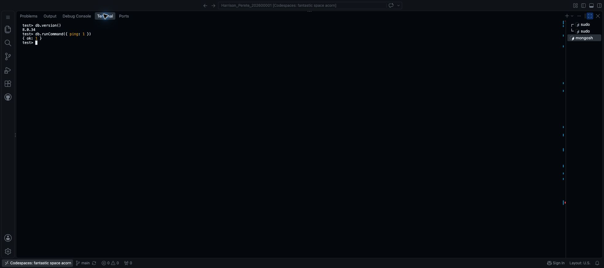

Step 16 Set up MongoDB in Codespaces
Portfolio 4 is worth 7 marks. Section 4 of the assessment brief asks for a NoSQL model for the same case study, implementation evidence and an explanation of suitability.
This step installs MongoDB and checks the connection. The library documents and queries come next. Keep PostgreSQL and your existing files; no new Codespace, Docker setup or Atlas account is needed.
Choose where MongoDB runs
Installing MongoDB inside Codespaces is optional. You can use MongoDB Atlas or an existing MongoDB server instead. The library demonstration uses the local Codespaces route below.
For MongoDB Atlas:
- Create or use a cluster in MongoDB Atlas.
- Follow its Connect → Shell instructions to set up a database user, allow your connection's IP address and get the
mongoshcommand. Allow only the needed client IP, not access from everywhere. Ifmongoshruns in Codespaces, use the Codespace's outgoing IP, not your computer's IP. - Install only the
mongoshclient if needed, following those instructions. You do not need to install or start the MongoDB server inside Codespaces. - Run Atlas's connection command and enter your database password when prompted. Do not put passwords in screenshots, prompts or GitHub files.
- Skip Sections 1–3 below and the localhost connection command in Section 4. Once connected, continue at Check your connection in Section 4.
The later document inserts and queries work with either route. Save your own results and describe the connection you actually used.
1. Use the Codespaces shell terminal
Use the terminal ending in $, not either PostgreSQL session from Step 15. If needed, choose Terminal → New Terminal.
Run each command separately and wait for the $ prompt before continuing. These commands run inside Codespaces, not on your computer.
Check the operating system:
lsb_release -ds
uname -mLook for Ubuntu 24.04 and x86_64. The commands below are for that setup. If yours differs, use the help prompt below before installing anything. If MongoDB is already installed, check its existing setup rather than reinstalling it.
2. Install MongoDB
Refresh the software list:
sudo apt-get updateInstall the tools needed to download and verify MongoDB's packages:
sudo apt-get install -y gnupg curlDownload MongoDB's official verification key:
curl -fsSL --connect-timeout 10 --max-time 30 https://pgp.mongodb.com/server-8.0.asc -o /tmp/mongodb-server-8.0.ascRegister that key:
sudo gpg --dearmor --yes --output /usr/share/keyrings/mongodb-server-8.0.gpg /tmp/mongodb-server-8.0.ascThese two commands normally finish without printing a result. Stop if either shows an error.
Next, tell Ubuntu where to download MongoDB:
- In Explorer, right-click
portfolio-4-nosql→ New File. - Name it
Surname_Firstname_StudentID_P4_MongoDBSource.list, using your own details. - Paste this one line and save with Cmd+S or Ctrl+S:
deb [arch=amd64 signed-by=/usr/share/keyrings/mongodb-server-8.0.gpg] https://repo.mongodb.org/apt/ubuntu noble/mongodb-org/8.0 multiverseThis file contains the official software source, not database records. The library file is MongoDBSource.list.
From your repository's $ terminal, run the following, replacing the example filename with yours:
sudo install -m 644 portfolio-4-nosql/Harrison_Perete_202600001_P4_MongoDBSource.list /etc/apt/sources.list.d/mongodb-org-8.0.listHere, install copies the source file to Ubuntu's software settings. It normally prints nothing.
Refresh the list again so Ubuntu can find MongoDB, then install the server and its shell:
sudo apt-get updatesudo apt-get install -y mongodb-org-server mongodb-mongoshWait for installation to finish. mongod is the database server; mongosh is where you type MongoDB commands. A message saying systemd is not running can appear in Codespaces; start the server directly below.
3. Start MongoDB
Create a folder for the database's working files, outside your Git repository:
mkdir -p /workspaces/mongodb-dataStart the server:
mongod --dbpath /workspaces/mongodb-data --logpath /workspaces/mongodb-data/mongod.log --logappend --bind_ip 127.0.0.1 --forkExpected: child process started successfully.
The command stores records in that folder, writes a log, accepts connections only from inside the Codespace and runs in the background. Do not start a second server if this one is already running.
This is a local practice setup without database passwords. Do not forward port 27017 or make it public. Do not upload the mongodb-data folder to GitHub.
Codespaces may forward this port automatically. Click the Ports tab beside Terminal. If 27017 appears, right-click its row → Stop Forwarding Port, then return to Terminal. This removes the forwarded connection; it does not stop MongoDB.
4. Open MongoDB and check the connection
For the local Codespaces route, at $, run:
mongosh "mongodb://127.0.0.1:27017"The local prompt changes to test>; an Atlas prompt can look different. You are now in MongoDB, not the shell or PostgreSQL. The local server may show access-control or system-tuning warnings. This setup is for fictional practice data only.
Check your connection
Follow these checks for either the local server or Atlas.
Press Ctrl+L, then run each command:
db.version()Expected: a MongoDB version number. The local example returns 8.0.34; Atlas or your existing server may use another version.
db.runCommand({ ping: 1 })Expected:
{ ok: 1 }Atlas may include extra fields; look for ok: 1. This confirms the server answered. It does not create the library database or any documents yet.
5. Save one screenshot
Take one screenshot showing the version command and successful ping.
- Mac: Cmd+Shift+4. Windows: Win+Shift+S, then save the image.
- Rename it
Surname_Firstname_StudentID_P4_MongoDBConnection.png, using your own details. Keep.jpgif it was saved as JPEG. - In Explorer, create
screenshotsinsideportfolio-4-nosql. - Right-click that folder → Upload…, and choose your renamed image.

6. Save the setup notes
Create Surname_Firstname_StudentID_P4_Setup.md in portfolio-4-nosql. Use this short example, replacing the version with your result and the image filename with yours:
Atlas users: describe MongoDB as running in Atlas, with a mongosh connection. Omit the local data-folder claim and start command below. You do not need a MongoDBSource.list file. Never include passwords.
# MongoDB setup
MongoDB runs in the existing Ubuntu Codespace, alongside PostgreSQL.
The server version is 8.0.34. Its data folder is /workspaces/mongodb-data,
outside the repository. Connections use 127.0.0.1; port forwarding is off.
## Start and connect
```bash
mongod --dbpath /workspaces/mongodb-data --logpath /workspaces/mongodb-data/mongod.log --logappend --bind_ip 127.0.0.1 --fork
mongosh "mongodb://127.0.0.1:27017"
```
## Connection check
db.version() returns 8.0.34 and db.runCommand({ ping: 1 }) returns { ok: 1 }.

## Reference
[MongoDB Ubuntu installation guide](https://www.mongodb.com/docs/v8.0/tutorial/install-mongodb-on-ubuntu/)Only record results you actually checked. Keep your actual version, ping result and screenshot. The completed library setup notes also retain the local installation commands.
Keep mongosh open for the next step. For Git commands, use another $ terminal through Terminal → New Terminal:
git diff --check
git add portfolio-4-nosql/
git diff --cached --stat
git commit -m "Set up MongoDB and verify the connection"
git push origin mainCheck the staged filenames before committing. Save the setup notes, screenshot and, for the local route, source file—not database working files or credentials.
When you return later, use your connection command again. For the local route only, if the server stopped with the Codespace, rerun the start command from Section 3. Rebuilding or deleting the Codespace can remove locally installed software or data; GitHub does not back up a running database. Keep your scripts and evidence saved.
Help prompt if your setup differs
I am setting up MongoDB for MIT 8103 Portfolio 4 in GitHub Codespaces.
MY OUTPUT
[PASTE THE RESULTS OF lsb_release -ds AND uname -m.
PASTE ANY ERROR AND THE EXACT COMMAND THAT PRODUCED IT.]
Help me install MongoDB Community Server and mongosh from official
MongoDB sources for this environment. Give one next command at a time,
with one short explanation, and wait for its result. Do not delete data,
change PostgreSQL, disable package verification, or make database ports
public. Do not assume systemd works in Codespaces. If the environment is
unsupported or installation already exists, explain before changing it.References: MongoDB's Ubuntu installation guide and mongod startup options.